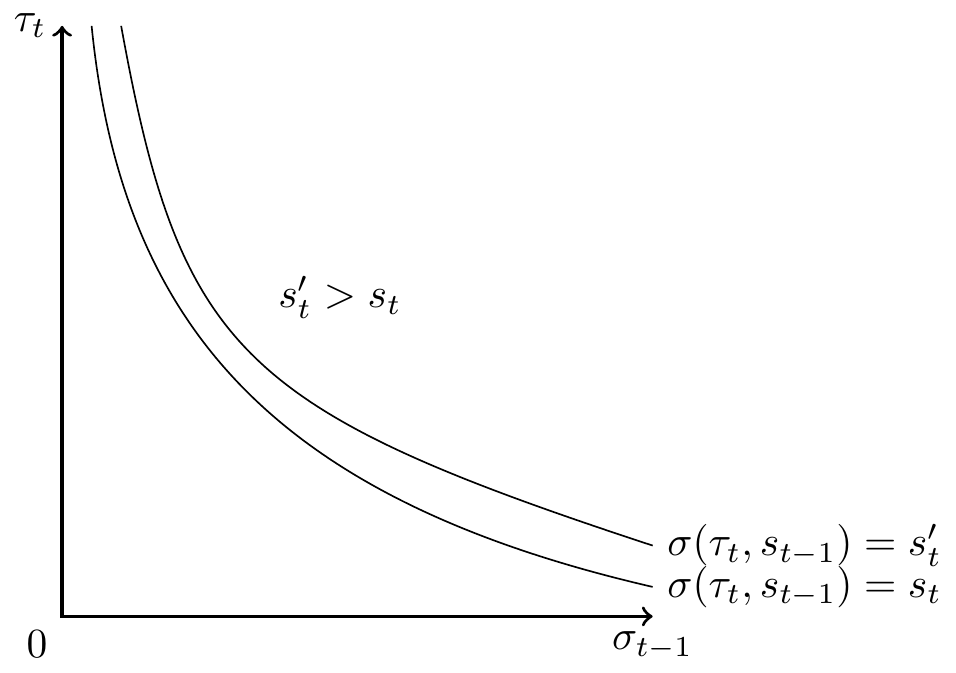

1 Introduction
The growing income inequality has been a big concern for economists and policy makers around the world. Many factors are responsible for the observed burgeoning income inequality, such as capital outflow, relocation of jobs, declining labor union, i.e., declining bargaining power of the labor, poor regulation of financial institutions, corruption, and all-encompassing globalization (Piketty 2014; Stiglitz 2015; Bourguignon 2015). In most economies, incomes of the bottom 99 percent come mainly from earnings and much of the inequality in earnings results from the inequality of skill formations Autor (2014).
A growing consensus reached among educators, media writers (see for instance, Traub (2000)), researchers in sociology, psychology and education (for instance, see (Barnett 1995; Entwisle 1995; McCormick 1989; Reynolds et al. 2001; Reynolds, Ou, and Temple 2018; Schweinhart, Barnes, and Weikart 1993)) and researchers in economics, (see for instance, (Currie 2001, 2011; Currie and Almond 2011; Duncan, Ziol-Guest, and Kalil 2010; Heckman 2000; Heckman et al. 2010; Heckman and Raut 2013, 2016; Keane and Wolpin 1997; Garcı́a et al. 2016; Raut 2018, 2003; Maluccio et al. 2009)) is that the children of poor SES are not prepared for college because they were not prepared for school to begin with. The summarized literature below in psychology, economics and the recently emerging genetics and epigenetics of health, cognitive and noncognitive developments of children show that the most effective intervention for the children of poor SES should be introduced at the preschool stage so that these children are prepared for schools and colleges and better health.
Much of research in the last century focused on cognitive skills as the main determinant of socioeconomic behaviors, school performances and labor market outcomes. An influential but controversial line of research argues that poor parents have poor cognitive abilities and that is why they are poor; children of poor SES inherit poor cognitive abilities from their parents; thus very little can be done to improve the cognitive skills of the disadvantaged children, and hence their school performance and labor market outcomes, see Herrnstein and Murray (1994) and other references in Plomin and Deary (2015). This view has been refuted using more appropriate data, statistical techniques and microbiological evidence.
It is the interplay of personality, emotion and cognition that determines most socioeconomic behaviors. Recent research in psychology, neurobiology, experimental game theory, and economics emphasize this. A branch of the psychology literature argues and empirically validates that the emotional intelligence is an important factor in socioeconomic decisions and behaviors—not the cognitive intelligence alone. Many definitions and measurements for emotional intelligence exit in the literature, however, the concept more relevant to our context is quoted from Mayer, Salovey, and Caruso (2004), “{[Emotional Intelligence is the] capacity to reason about emotions, and of emotions to enhance thinking. It includes the abilities to accurately perceive emotions, to access and generate emotions so as to assist thought, to understand emotions and emotional knowledge, and to reflectively regulate emotions so as to promote emotional and intellectual growth”. (Bar-On 2000; Goleman 2009) use somewhat broader definitions by including other personality traits in their definitions. It has been found that measures based on all these different definitions are highly correlated with each other and each explains strongly many socioeconomic behaviors independent of cognitive skills, (see Chakrabarti and Chatterjea (2017) for some of these results in psychology and for a synthesis of various definitions, and (Raut 2003; Heckman and Raut 2016) for significant positive effects of non-cognitive skills on labor market earnings, independent of the effects of cognitive skills).
Group outcomes are generally more efficient than what individuals could do by themselves. Group activities to attain some common goal, however, require each member of the group to perform constant mind reading of the other members and evaluate how others may react to one’s action. The mechanism by which one reads other’s mind in a conflicting or cooperative situation is known in the psychology literature as theory of mind, a term introduced by Premack and Woodruff (1978). Doherty (2008) describes various mechanisms for the theory of mind. One who has better emotional intelligence and a better theory of mind can be more effective in a group, and can become the leader of the group. A group can have a higher level of group emotional intelligence and cognitive intelligence than another group, and can be more efficient and more productive as a result for many activities, Woolley et al. (2010). In experimental game theory such non-cognitive skills—emotional intelligence and theory of mind—play important role, (Camerer, Loewenstein, and Prelec 2005; Kahneman 2013; Winter 2014). The recent economics literature shows that non-cognitive skills such as socialization and motivation are also important for positive labor market outcomes, (Deming 2017; Heckman and Raut 2016; Raut 2003; Maluccio et al. 2009).
Where are these emotional intelligence or non-cognitive skills and the cognitive skills produced? For the effect of early childhood experiences, especially mother-child interactions, on the development of the theory of mind of the child, see (Doherty 2008; Ruffman, Slade, and Crowe 2002). Another branch of the psychology literature, e.g. the work of Bowlby (1982), argues that affect (emotion) dysregulation which begins to form immediately after birth, especially during the first two years of age, from low quality interaction of the primary care-taker (generally the mother) with the baby can have long lasting effects on emotional development of the child in later ages. NETWORK (2004) carried a longitudinal study and found evidence for such affect dysregulation mechanisms. The emotional dysregulation also conditions cognitive developments of children. More recent neurobiology research on this phenomena confirms this, see for instance, A. N. Schore (2005) and see J. R. Schore and Schore (2008) for a survey of this line of research. When parents are incapable of producing these skills, a good preschool program can be a good substitute for it.
Around the turn of the twenty-first century, a rapidly growing microbiology literature emerged, focusing on genetic and epigenetic mechanisms of personality, emotion and cognitive developments of individuals. The twenty-century microbiology research thought full DNA mapping of human genome will be able to uncover fully the mechanism of human development. But the research in this area fell short of explaining why identical twins diverge so much in their gene expressions or phenotypes as they progress through their lives. All cells in a body starting with the single fertilized egg have the same genetic mapping (i.e.,the same DNA sequence) throughout life. It is the epigenetic (literally means on top of genetic) codes, which are influenced by the internal and external environments of the body cells, indeed determine which genes are expressed, silenced, or mutated during cell divisions, and hence determine the development of the mind and body and their health status. For instance, stress of various kinds can have effects on epigenetic reprogramming of the plasticity of various parts of the brain that perform cognitive processing, language processing, emotion or affect regulations, the size and efficiency of the working memory and the long-term memory (see McEwen and Gianaros (2011) for the effects of stress in general, Champagne et al. (2008), Hellstrom et al. (2012) for the effects of parenting practices, and Gluckman et al. (2008) for the effects of in utero environmental factors on cognitive and non-cognitive health developments). Other environmental factors such as the quality of language exposure, the presence of books, computers, musical instruments at home, the speech pattern, cognitive skills of mother and other care givers have also significant effects on the development of the neural network of the brain (i.e.,the network of dendrites, axons and synapses) specialized for language processing, creative writing or musical talents, (Mezzacappa 2017; Murgatroyd and Spengler 2011).
To look for microbiological evidence for the above, a number of recent neurological studies used fMRI images of brain areas for many individuals. They found that poverty has significant negative effects on the development of a child’s certain brain areas that are responsible for personality, emotion and executive functions. For instance, a large scale neurological study by Kimberly G. Noble et al. (2015) found that family income significantly affects children’s brain size, particularly in the surface area of the cerebral cortex that does most of the cognitive processing. See also their earlier study, Kimberly G. Noble et al. (2012) and the commentary in Balter (2015). In another large longitudinal neurological study, Hair et al. (2015) followed children starting at an early age up into their school years. They measured their scores on cognitive and academic achievements, and development of brain tissue, including gray matter of the total brain, frontal lobe, temporal lobe, and hippocampus. They found significant negative effects of poverty on developments of these brain areas and on their academic achievements.
The vast literature above suggest that early age events have many lasting effects, as I mentioned earlier. In modern technology-rich economies, providing high quality education to the talented children and matching their jobs with the highly productive technical sector is crucial for economic growth, social mobility and earnings inequality. Individuals know their own abilities but the employers do not observe them. Employers use education as a predictor of a worker’s level of unobserved cognitive abilities. Because education acts as an imperfect predictor of one’s cognitive abilities, and children of poor SES have disadvantages of the type mentioned above in acquiring education, the individual investment in education in the economy distorts productive efficiency, lowers social mobility and increases earnings inequality. The paper will address these issues in a signaling model, adapting the asymmetric information frameworks of Stiglitz (1975) and A. M. Spence (1974).
The rest of the paper is organized as follows: Section 2 describes the basic model of human capital acquisition in a signaling equilibrium framework. Section 4 studies the properties of signaling equilibria specializing to the log-normal case and shows that the use of education as a signal accentuates earnings inequality and reduces social mobility. Section 5 specializes the model to two schooling levels and two levels of unobserved cognitive ability and then studies the nature of equilibrium earnings inequality, social mobility and growth when children of poor SES are adversely affected in obtaining education.
2 The Basic Model
The economy consists of an overlapping generations of agents and of risk neutral competitive producers. In each period there is a continuum of adult population, who live for one period. At the end of the period, he dies and a new adult child is born to each parent. Denote by \tau an individual’s cognitive ability which affects his productivity at workplace and learning in school. I assume for simplicity that \tau is one dimensional, and it takes a \mathcal{T}=(0,\infty ). In the set \mathcal{T}, a higher number denotes a greater level of cognitive ability. An individual’s productivity depends on his schooling level and his level of cognitive ability. The cost of schooling depends on his own schooling level, level of cognitive ability and his family background, denoted here with his parent’s schooling level s_{t-1}. The level of schooling can be used to signal one’s productivity level. An individual chooses a schooling level s_{t} which which together with his cognitive ability determine his productivity level, productivity function e(s,\tau ). Possible education levels are assumed to be from the set \mathcal{S}=\left( 0,\infty \right), a higher number representing a higher education level.1 I assume that the cognitive level \tau _{t}\in \mathcal{T} of a child born to a parent of cognitive ability \tau _{t-1} and schooling level s_{t-1} follows probability distribution independent of \tau _{t-1}and s_{t-1}, which is characterized by the pdf g(\tau _{t})2
I consider only human capital investment in education, other important forms of human capital investment such as health and nutrition are not considered here. Attainment of an education level by an individual is a more complex decision making process than assumed here. Generally, parents make the initial investments such as preschool investments and investments up to college or so, until the child reaches enough maturity to make his own schooling decision. Family background can have great influence on educational attainment in several other ways. For instance, suppose that the quality of preschool investment of parents’ time at home affect children’s motivation and persistence to continue schooling. Then, of course, more highly educated parents can provide better learning environment for their children at home. Similarly, more highly educated parents with their better knowledge base of child care, or simply because of their higher incomes can provide better prenatal and post-natal care, and health care for proper cognitive and affective developments of their children.3
An individual in period t of ability \tau _{t} and family background s_{t-1}is denoted by the index \xi _{t}=\left( \tau _{t},s_{t-1}\right) .The distributions of individuals in period t is characterized by the pdf f_{\xi _{t}}\left( \tau _{t},s_{t-1}\right) =g(\tau _{t}).\pi _{t-1}\left( s_{t-1}\right) , where \pi _{t-1}\left( .\right) is the pdf of the schooling distribution of the parents in period t. The effect of the above types of family ground is assumed to affect his cost of obtaining a level of education s_{t}. Denote this cost function for agent (\tau _{t},s_{t-1}) by \theta_{t}(s_{t},\tau _{t},s_{t-1})4
Assume that all individuals have identical linear5 utility function u(c_{t}), where c_{t} is the consumption of an adult of period t. An adult of period t with cognitive ability \tau _{t}\in \mathcal{T} and parental educational background s_{t-1}, takes the wage function w_{t}(s_{t}) of period t as given and decides his education level s_{t}\in \mathcal{S} by solving the following problem:
\sigma _{t}\left( \tau _{t},s_{t-1}\right) =\arg \max_{s_{t}\in \mathcal{S} } u\left( w_{t}(s_{t})-\theta (s_{t},\tau _{t},s_{t-1})\right) \tag{1}
For regular cases, there is a unique optimal solution s_{t} for each agent \xi _{t}=\left( \tau _{t},s_{t-1}\right). Notice that in this framework, all individuals with cognitive ability \tau _{t} and family background s_{t-1} behave identically. Denote the optimal solution of the choice problem in Equation 1 for agent \left( \tau _{t},s_{t-1}\right) by \sigma _{t}\left( \tau _{t},s_{t-1}\right).
I assume that the production sector is competitive; the producer is risk neutral; there is no affirmative action in hiring, i.e., workers with the same level of schooling are treated the same way, no matter what their family backgrounds are. In each period t\geq 1, a producer announces a wage schedule w_{t}(s_{t}) for hiring purposes. He observes the education level s_{t} of a worker but not his innate productive ability level \tau _{t}. The employer holds a subjective belief about his productivity level e\left( s_{t},\tau _{t}\right) given his education level s_{t}. This belief is represented by a condition density function q_{t}\left( e_{t}|s_{t}\right) ,e\in \mathcal{E},s_{t}\in \mathcal{S}. Perfect competition, and expected profit maximization imply that w_{t}(s_{t}) =\int e_{t} q_{t}\left( e_{t}|s_{t}\right) de_{t} in equilibrium.
The economy begins at time t=1 with an adult population whose parents’ education level is distributed as \pi _{0}\left( s\right). Given \pi _{0}, the transition probability density function p_{t}\left(s_{t}|s_{t-1}\right) determines the dynamics of the schooling distributions \pi _{t},t\geq 1.
The signaling equilibrium is recursively defined over time as follows: At the beginning of time period t, the population density function \pi _{t-1}\left( s_{t-1}\right) is known. A competitive producer knows these and he knows the distribution of \tau _{t} in the population, but he does not observe an individual agent’s cognitive ability level \tau _{t}. The employer holds a subjective belief q(e_{t}|s_{t}) and announces an earning function w_{t}(s_{t})=\int e_{t} q(e_{t}|s_{t}) de_{t} for hiring purpose. Given w_{t}(s_{t}), each worker \left( \tau _{t},s_{t-1}\right) decides his optimal education level \sigma _{t}\left( \tau _{t},s_{t-1}\right) as in Equation 1. Given the probability distributions over family backgrounds, \pi _{t-1}\left( s_{t-1}\right) and innate ability g(\tau _{t}), the optimal schooling decision variable \sigma _{t}\left( \tau _{t},s_{t-1}\right) induces a joint probability distribution of \left( s_{t},\tau _{t}\right) in period t. Denote the joint pdf of the \left( s_{t},\tau _{t}\right) by f_{s_{t},\tau _{t}}\left( .,.\right). This joint distribution of \left( s_{t},\tau _{t}\right) induces a conditional distribution of \tau _{t} given s_{t}, denoted by f_{\tau _{t}|s_{t}}\left( .\right). This conditional distribution together with the productivity function e_{t}=e\left( s_{t},\tau _{t}\right) produces the observed distribution of productivity levels \hat{q}_{t}(e|s_{t}) for each level of s_{t}. We have a signaling equilibrium, when the anticipated distribution coincides with the above observed distribution, i.e., q_{t}\left( e_{t}|s_{t}\right) =\hat{q} _{t}\left( e_{t}|s_{t}\right) for all education levels that are chosen by some agent in the population.
Notice that optimal schooling choices s_{t}=\sigma \left( \tau_{t},s_{t-1}\right) determines the transition probability measure P_{t}\left( s_{t}\in A|s_{t-1}\right) of an individual born in the family background s_{t-1} moves to a family background s_{t}\in A as follows:
P_{t}(s_{t}\in A s_{t-1})=\int \mathcal{I}_{A}\left( \sigma \left( \tau _{t},s_{t-1}\right) \right) g(\tau _{t}) d\tau _{t} \tag{2}
The transition probabilities for earnings between period t-1 and period t can be defined similarly. The transition probability distribution P_{t}\left( s_{t}\in A|s_{t-1}\right) determines \pi _{t}, the distribution of s_{t} in each period t as follows
\pi _{t}\left( s_{t}\in A\right) =\int P_{t}(s_{t}\in A s_{t-1}) d\pi _{t-1}\left( s_{t-1}\right) . \tag{3}
The economy moves to the next period with known \pi _{t} and the above process starts all over again.
Initial distribution \pi ^{0} of social groups in \mathcal{S}, is given. A signaling equilibrium is a sequence of probability distributions \left\{ q_{t}\left( e_{t}|s_{t}\right) \right\} _{1}^{\infty } and a sequence of optimal schooling decision rules \left\{ \sigma _{t}\left( \tau _{t},s_{t-1}\right) \right\} _{1}^{\infty } defined in Equation 1 such that at each period t\geq 1,
The induced wage schedule w_{t}\left( s_t\right) =\int e_{t}q_{t}\left( e_{t}|s_{t}\right) de_{t} is a smooth concave function.
Given w_{t}\left( s_t\right), the function \sigma _{t}\left(\tau _{t},s_{t-1}\right) solves the schooling decision problem in Equation 1 of each agent \left( \tau _{t},s_{t-1}\right).
The induced conditional distribution \hat{q}_{t}\left( e_{t}|s_{t}\right) of e_{t} given the optimal solution s_{t}=\sigma _{t}\left( \tau _{t},s_{t-1}\right) obtained by using Bayes rule coincides with the anticipated conditional distribution q_{t}\left( e_{t}|s_{t}\right) for all s_{t}.
Assume that \theta \left( s_{t},\tau _{t},s_{t-1}\right) =\theta _{1}(s_{t}).\theta _{2}(\tau _{t},s_{t-1}) \tag{4}
where \theta _{1}\left( s_{t}\right) is a monotonically increasing smooth function of s_{t}, and \theta _{2}(\tau _{t},s_{t-1}) is a smooth function decreasing in each variable \tau _{t} and s_{t-1}. The distributions of agents in period t is characterized by the pdf f_{\xi _{t}}\left( \tau _{t},s_{t-1}\right) =g(\tau _{t}).\pi _{t-1}\left( s_{t-1}\right). Assume that there is no affirmative action in hiring, i.e., workers with the same level of schooling are treated the same way, no matter what their family backgrounds are. The first order condition of the schooling choice problem in Equation 1 is given by
\frac{w_{t}^{\prime }\left( s_{t}\right) }{\theta _{1}^{\prime }\left( s_{t}\right) }=\theta _{2}\left( \tau _{t},s_{t-1}\right) \tag{5}
The left hand side of Equation 5 is a strictly monotonic function of s_{t}, and hence we can solve s_{t} as a function of agent characteristics \left( \tau _{t},s_{t-1}\right), which we denote by s_{t}=\sigma _{t}\left( \tau _{t},s_{t-1}\right).
Note that for each \tau _{t}, s_{t}, we can solve s_{t-1} as a function of (s_{t}, \tau _{t}), which we denote by s_{t-1}=s_{t}^{\ast -1}\left( \tau _{t},w_{t}^{\prime }\left( s_{t}\right) \theta _{1}^{\prime }(s_{t})\right). Let the bivariate random variable X_{t}\equiv \left( s_{t},\tau _{t}\right) be the optimal schooling level s_{t} and the cognitive productivity level \tau _{t} of the child \xi _{t}=(\tau _{t},s_{t-1}). From the probability distribution of \xi _{t}=\left( \tau _{t},s_{t-1}\right) , we derive the joint probability distribution f_{\left( s_{t},\tau _{t}\right)}\left( s_{t},\tau _{t}\right) of s_{t},\tau _{t} using the transformation s_{t-1}=s_{t}^{\ast -1}\left(\tau _{t},w_{t}^{\prime }\left( s_{t}\right) /\theta _{1}^{\prime }(s_{t})\right), \tau _{t}=\tau _{t}. Note that the Jacobian of the transformation is given by
\begin{aligned} \frac{\partial (\tau _{t},s_{t-1)}}{\partial (s_{t},\tau _{t})} &=\det \left( \begin{array}{cc} \frac{\partial \tau _{t}}{\partial s_{t}} & \frac{\partial \tau _{t}}{ \partial \tau _{t}} \\ \frac{\partial s_{t-1}}{\partial s_{t}} & \frac{\partial s_{t-1}}{\partial \tau _{t}} \end{array} \right) \\ &=-\frac{w_{t}^{\prime \prime }\left( s_{t}\right) \theta _{1}^{\prime }\left( s_{t}\right) -w_{t}^{\prime }\left( s_{t}\right) \theta _{1}^{\prime \prime }\left( s_{t}\right) }{\left[ \theta _{1}^{\prime }\left( s_{t}\right) \right] ^{2}\partial \theta _{2}\left( \tau _{t},s_{t}^{\ast -1}\left( \tau _{t},w_{t}^{\prime }\left( s_{t}\right) /\theta _{1}^{\prime }(s_{t})\right) \right) /\partial s_{t-1}} \end{aligned}
Hence the joint pdf of s_{t},\tau _{t} is given by f_{\left( s_{t},\tau _{t}\right) }\left( s_{t},\tau _{t}\right) =g\left( \tau _{t}\right) .\pi _{t-1}\left( s_{t}^{\ast -1}\left( \tau _{t},\frac{ w_{t}^{\prime }\left( s_{t}\right) }{\theta _{1}^{\prime }(s_{t})}\right) \right) \left\vert \frac{\partial (\tau _{t},s_{t-1)}}{\partial (s_{t},\tau _{t})}\right\vert
A period-t signaling equilibrium is a wage schedule w_{t}\left( s_{t}\right) such that
\begin{aligned} w_{t}\left( s_{t}\right) &=\int_{T}e\left( s_{t},\tau _{t}\right) f_{\tau _{t} s_{t}}\left( \tau _{t}\right) d\tau _{t}=\frac{\int_{T}e\left( s_{t},\tau _{t}\right) f_{X_{t}}\left( s_{t},\tau _{t}\right) d\tau _{t}}{ \int_{T}f_{X_{t}}\left( s_{t},\tau _{t}\right) d\tau _{t}} \\ &=\frac{\int_{T}e\left( s_{t},\tau _{t}\right) g(\tau _{t})\pi _{t-1}\left( s_{t}^{\ast -1}\left( \tau _{t},\frac{w_{t}^{\prime }\left( s_{t}\right) }{ \theta _{1}^{\prime }(s_{t})}\right) \right) \left[ \frac{\partial \theta _{2}}{\partial s_{t-1}}\left( \tau _{t},s_{t}^{\ast -1}\left( \tau _{t}, \frac{w_{t}^{\prime }\left( s_{t}\right) }{\theta _{1}^{\prime }(s_{t})} \right) \right) \right] ^{-1}d\tau _{t}}{\int_{T}g(\tau _{t})\pi _{t-1}\left( s_{t}^{\ast -1}\left( \tau _{t},\frac{w_{t}^{\prime }\left( s_{t}\right) }{\theta _{1}^{\prime }(s_{t})}\right) \right) \left[ \frac{ \partial \theta _{2}}{\partial s_{t-1}}\left( \tau _{t},s_{t}^{\ast -1}\left( \tau _{t},\frac{w_{t}^{\prime }\left( s_{t}\right) }{\theta _{1}^{\prime }(s_{t})}\right) \right) \right] ^{-1}d\tau _{t}} \\ &=\Psi \left( w_{t}^{\prime }\left( s_{t}\right) ,s_{t}\right) \text{ say} \end{aligned}
The right hand side of the above equation is the observed or realized average productivity of the signal class s_{t}, which in other words, is the conditional expectation of e\left( s_{t},\tau _{t}\right) with respect to the observed empirical conditional distribution of \tau _{t} given s_{t}. The above is a first order non-linear differential equation which under general conditions have smooth solution w_{t}\left( s_{t}\right), which is unique when we provide an initial condition. We take the initial condition w\left( 0\right) =0, i.e., the labor with no education has zero productivity.
I do not examine conditions under which there exists a signaling equilibrium. Instead I specialize to log-normal specification of the distributions of productivity level \tau _{t} and the family background level s_{t-1}and explicitly compute the signaling equilibrium and study the properties of equilibrium earnings inequality and social mobility.
3 Existence of Equilibrium
I assume the following:
Assumption A1: \theta _{t}(s_{t},\tau _{t},s_{t-1}) =\theta _{1}\left( s_{t}\right) \cdot \theta _{2}\left( \tau _{t}\right) \cdot \theta _{3}\left( s_{t-1}\right) , \theta _{1}\left( {}\right) is smooth, monotonically increasing and concave, \theta _{2}\left( {}\right) and \theta _{3}\left( .\right) are smooth, monotonically decreasing.
Assumption A2: The distributions g\left( \tau \right) and \pi _{0}\left( s_{0}\right) belong to a concave conjugate family.
Theorem 1 Under Assumption A1 and Assumption A2, there exists a signalling equilibrium.
Proof. Suppose we have found a smooth concave wage schedule w_{t}\left( s\right) with a first derivative w_{t}^{\prime }\left( {}\right). The first order condition of the optimization problem in Equation 6 is given by
\frac{w_{t}^{\prime }\left( s_{t}\right) }{\theta _{1}^{\prime }\left( s_{t}\right) }=\theta _{2}\left( \tau _{t}\right) \theta _{3}\left( s_{t-1}\right) \tag{6}
Since by Assumption A1, the left hand side of Equation 6 is a monotonic function of s_{t}, one can uniquely solve s_{t} as a function of agent characteristics \left( \tau _{t},s_{t-1}\right) , which produces the optimal schooling decision rule, \sigma _{t}\left( s_{t},\tau _{t}\right) in the definition of signaling equilibrium. For each \tau _{t}, s_{t}, one can find a unique s_{t-1} from Equation 6. For given \tau _{t}, consider the 1-1 and onto transformation s_{t}\longmapsto s_{t-1} defined by s_{t-1}=\phi _{t}\left( \frac{ w_{t}^{\prime }\left( s_{t}\right) }{\theta _{1}^{\prime }(s_{t})\theta _{2}\left( \tau _{t}\right) }\right). The Jacobian of the transformation is given by
\frac{ds_{t-1}}{ds_{t}}=-\frac{w_{t}^{\prime \prime }\left( s_{t}\right) \theta _{1}^{\prime }\left( s_{t}\right) -w_{t}^{\prime }\left( s_{t}\right) \theta _{1}^{\prime \prime }\left( s_{t}\right) }{\left[ \theta _{1}^{\prime }\left( s_{t}\right) \right] ^{2}\theta _{3}^{\prime }\left( \phi _{t}\left( \frac{w_{t}^{\prime }\left( s_{t}\right) }{\theta _{1}^{\prime }(s_{t})\theta _{2}\left( \tau _{t}\right) }\right) \right) }
Hence the pdf of X_{t} is given by f_{s_{t},\tau _{t}}\left( s_{t},\tau _{t}\right) =g\left( \tau _{t}\right) .\pi _{t-1}\left( \phi _{t}\left( \frac{w_{t}^{\prime }\left( s_{t}\right) }{ \theta _{1}^{\prime }(s_{t})\theta _{2}\left( \tau _{t}\right) }\right) \right) \left\vert \frac{ds_{t-1}}{ds_{t}}\right\vert From the above, the conditional distribution of \tau _{t} given s_{t} is given by
\begin{aligned} f_{\tau _{t} s_{t}}\left( \tau _{t} s_{t};w_{t}^{\prime }\left( s_{t}\right) \right) &=\frac{f_{s_{t},\tau _{t}}\left( s_{t},\tau _{t}\right) }{\int f_{s_{t},\tau _{t}}\left( s_{t},\tau _{t}\right) d\tau _{t}} \\ &=\frac{g\left( \tau _{t}\right) .\pi _{t-1}\left( \phi _{t}\left( \frac{ w_{t}^{\prime }\left( s_{t}\right) }{\theta _{1}^{\prime }(s_{t})\theta _{2}\left( \tau _{t}\right) }\right) \right) \cdot \theta _{3}^{\prime }\left( \phi _{t}\left( \frac{w_{t}^{\prime }\left( s_{t}\right) }{\theta _{1}^{\prime }(s_{t})\theta _{2}\left( \tau _{t}\right) }\right) \right) }{ \int g\left( \tau _{t}\right) .\pi _{t-1}\left( \phi _{t}\left( \frac{ w_{t}^{\prime }\left( s_{t}\right) }{\theta _{1}^{\prime }(s_{t})\theta _{2}\left( \tau _{t}\right) }\right) \right) \cdot \theta _{3}^{\prime }\left( \phi _{t}\left( \frac{w_{t}^{\prime }\left( s_{t}\right) }{\theta _{1}^{\prime }(s_{t})\theta _{2}\left( \tau _{t}\right) }\right) \right) d\tau _{t}} \end{aligned}
In equilibrium we should have \begin{aligned} w_{t}\left( s_{t}\right) &=\int e\left( s_{t},\tau _{t}\right) f_{\tau _{t} s_{t}}\left( \tau _{t} s_{t};w_{t}^{\prime }\left( s_{t}\right) \right) d\tau _{t} \\ &\equiv \Psi \left( s_{t},w_{t}^{\prime }\left( s_{t}\right) \right) \text{ say} \nonumber \end{aligned} \tag{7}
The above is a non-linear first order differential equation. The existence of a signaling equilibrium boils down to the question, does the above differential equation has a solution w_{t}\left( s\right) which is smooth and concave and satisfying the condition w_{t}\left( 0 \right) =0.
How many?
I show now that the above has a unique solution.
The proof follows the steps in the proof of Theorem 2 in Quinzii and Rochet (1985).
\blacksquare
4 Log-Normal Economy
I examine how inequality in earnings and schooling changes over time with the specification of log-normal distributions for cognitive ability \tau and the initial distribution of population over the observed schooling levels of parents.
The notation X\sim \Lambda \left(\mu ,\sigma ^{2}\right) means the random variable X is log-normally distribution with parameters \mu , and \sigma ^{2}, i.e. \ln X is normally distributed with mean \mu and variance \sigma ^{2}. Assume that
\begin{aligned} s_{t-1} &\sim &\Lambda \left( \mu _{s_{t-1}},\sigma _{s_{t-1}}^{2}\right) \\ \tau _{t} &\sim &\Lambda \left( \mu _{\tau },\sigma _{\tau }^{2}\right) \nonumber \\ e(s_{t},\tau _{t}) &=s_{t}^{\rho }.\tau _{t},\text{ }\rho >0. \nonumber \end{aligned} \tag{8}
For simplicity and without loss of much generality, I assume that \theta _{1}\left( s_{t}\right) =s_{t}. I consider two cases below. First I consider the case in which cost of education depends only on \tau and not on family background s_{t-1}. In this case, from the observable optimal schooling level s_{t}, the unobserved cognitive ability level \tau _{t} or the productivity level e\left( s_{t},\tau _{t}\right) of the worker could be predicted perfectly. Then I consider the case in which cost of education depends on both \tau _{t} and the family background s_{t-1}. In this case the observed optimal education level can predict the unobserved cognitive skill level imperfectly. I then compare how the distribution of earnings and education levels become more unequal due to signaling role of education.
4.1 Signaling cost does not depend on family background
Assume that cost of education does not depend on the family background of the child, i.e. family background does not have effect on child development. Let it be more specific as \theta _{2}\left( \tau _{t},s_{t-1}\right) =\tau _{t}^{-\alpha } where, \alpha >0. The pdf of \tau _{t} is assumed to be log-normal as follows:
f\left( \tau _{t}\right) =\frac{1}{\left( 2\pi \sigma _{\tau }\right) ^{1/2}\tau }\exp \left\{ -\frac{1}{2}\left[ \frac{\left( \ln \tau -\mu _{\tau }\right) ^{2}}{\sigma _{\tau }^{2}}\right] \right\}
From the first order condition of the agent’s schooling choice problem Equation 5, we have w_{t}^{\prime }\left( s_{t}\right) =\tau _{t}^{-\alpha }. Note that given schooling level s_{t}, one can perfectly predict his ability level \tau _{t} as I mentioned earlier. Denote this forecasting rule by \tau _{t}=\left( w_{t}^{\prime }\left( s_{t}\right) \right) ^{-1/\alpha }. This prediction of \tau _{t} given the optimal schooling level s_{t} is equivalent to the degenerate pdf f_{\tau _{t}|s_{t}}\left( \tau _{t}|s_{t}\right) =1 if \tau _{t}= \left( w_{t}^{\prime }\left( s_{t}\right) \right) ^{-1/\alpha } and f_{\tau _{t}|s_{t}}\left( \tau _{t}|s_{t}\right) =0 otherwise. The equilibrium is attained if w_{t}\left( s_{t}\right) =\int e\left( s_{t},\tau _{t}\right) f_{\tau _{t}|s_{t}}\left( \tau _{t}|s_{t}\right) d\tau _{t}, which in our case simplifies to the following first order differential equation,
\frac{dw_{t}(s_{t})}{ds_{t}}=\left[ \frac{s_{t}^{\rho }}{w_{t}\left( s\right) }\right]^{\alpha}
The above first order non-linear differential equation is in the separation-of-variables form and can be solved explicitly. The general solution of this differential equation is given by
w_{t}\left( s_{t}\right) =\left[ c+\frac{\alpha +1}{\alpha \rho +1} s_{t}^{\alpha \rho +1}\right] ^{\frac{1}{1+\alpha }}\text{, where }c\text{ is a constant of integration.}
Each value of c will give a signaling equilibrium and there are continuum of them. Using the initial condition w\left( 0\right) =0, the equilibrium earnings function becomes, w_{t}\left( s_{t}\right) =\left[ \frac{\alpha +1}{\alpha \rho +1}\right] ^{ \frac{1}{1+\alpha }}s_{t}^{\frac{\alpha \rho +1}{\alpha +1}}\text{.} \tag{9} To compute the equilibrium distribution of schooling levels and the wages, note that \tau _{t}=\left( w_{t}^{\prime }\left( s_{t}\right) \right) ^{-1/\alpha }. Substituting the value of w_{t}^{\prime }\left( s\right) from the above, and taking natural log, i.e. \ln on both sides, we see that \ln\left( s_{t}\right) =\frac{1}{1-\rho }\ln \frac{\alpha \rho +1}{1+\alpha } +\frac{\alpha +1}{1-\rho }\ln \tau. Thus, the equilibrium schooling distribution in period t follow the following log-normal distribution, s_{t}\sim \Lambda \left( \frac{1}{1-\rho }\ln \frac{\alpha \rho +1}{1+\alpha }+\frac{\alpha +1}{1-\rho }\mu _{\tau },\left[ \frac{1+1/\alpha }{1-\rho } \right] ^{2}\alpha ^{2}\sigma _{\tau }^{2}\right) \tag{10} and the equilibrium wage distribution in period t is also a log-normal, w_{t}\sim \Lambda \left( \frac{\rho }{1-\rho }\ln \frac{\alpha \rho +1}{ \alpha +1}+\frac{\alpha \rho +1}{1-\rho }\mu _{\tau },\left[ \frac{\alpha \rho +1}{\alpha +1}\cdot \frac{1+\rho /\alpha }{1-\rho }\right] ^{2}\alpha ^{2}\sigma _{\tau }^{2}\right) . \tag{11}
One can compute the transition probability density function for schooling levels of two generations f_{s_{t}|s_{t-1}}\left( s_{t}|s_{t-1}\right) and the transition probability density function for earnings f_{w_{t}|w_{t-1}}\left( w_{t}|w_{t-1}\right) and compute a measure of schooling mobility and earnings mobility.
The Gini-coefficient for schooling inequality in period t is \begin{aligned} G_{s_{t}} &=2\Phi \left( \frac{1}{\sqrt{2}}\frac{1+1/\alpha }{1-\rho }\sqrt{ \alpha ^{2}\sigma _{\tau }^{2}}\right) -1 \nonumber \\ & \\ G_{w_{t}} &=2\Phi \left( \frac{1}{\sqrt{2}}\frac{\alpha \rho +1}{\alpha +1} \cdot \frac{1+1/\alpha }{1-\rho }\sqrt{\alpha ^{2}\sigma _{\tau }^{2}} \right) -1 \nonumber \end{aligned} \tag{12} where \Phi is the erf(x) function. The Gini coefficient of earning distribution is smaller than the Gini coefficient of schooling distribution. How these compare when schooling cost depends on the family background, and thus education is an imperfect signal of cognitive skill.
4.2 Signal cost depends on ability and family background
I now assume that schooling cost depends on family background, which is incorporated by assuming that \theta _{2}\left( \tau _{t},s_{t-1}\right) =\tau _{t}^{-\alpha }\cdot s_{t-1}^{-\gamma }, where, \alpha ,\gamma >0. I assume that family background of is log-normally distributed as s_{t-1}w_{t}\sim \Lambda \left( \mu _{s_{t}-1},\sigma _{s_{t-1}}^{2}\right). The rest of the specifications are as in the previous subsection.
The joint pdf of \left( \tau _{t},s_{t-1}\right) is given by f_{\left( \tau _{t},s_{t-1}\right) }\left( \tau _{t},s_{t-1}\right) =\frac{1 }{2\pi \sigma _{\tau }\sigma _{s_{t-1}}\tau _{t}s_{t-1}}\exp \left\{ -\frac{1 }{2}\left[ \frac{\left( \ln \tau _{t}-\mu _{\tau }\right) ^{2}}{\sigma _{\tau }^{2}}+\frac{\left( \ln s_{t-1}-\mu _{s_{t-1}}\right) ^{2}}{\sigma _{s_{t-1}}^{2}}\right] \right\} The first order condition of the agent is w_{t}^{\prime }\left( s_{t}\right) =\theta _{2}\left( \tau _{t},s_{t-1}\right) =\tau _{t}^{-\alpha }\cdot s_{t-1}^{-\gamma }\text{ } Assume as before \theta _{t}^{\prime }\left( s_{t}\right) =1. Notice that the above implicitly defines a transformation \left( \tau _{t},s_{t-1}\right) \longmapsto \left( \tau _{t},s_{t}\right) and the Jacobian of this transformation is given by \begin{aligned} \frac{\partial \left( \tau _{t},s_{t-1}\right) }{\partial \left( \tau _{t},s_{t}\right) } &=\det \left[ \begin{array}{cc} 1 & 0 \\ \frac{\partial s_{t-1}}{\partial \tau _{t}} & -\frac{1}{\gamma }\left[ w_{t}^{\prime }\left( s_{t}\right) \right] ^{-\frac{\gamma +1}{\gamma } }\cdot \tau _{t}^{-\frac{\alpha }{\gamma }}\cdot w_{t}^{\prime \prime }\left( s_{t}\right) \end{array} \right] \\ &=-\frac{1}{\gamma }\left[ w_{t}^{\prime }\left( s_{t}\right) \right] ^{- \frac{\gamma +1}{\gamma }}\cdot \tau _{t}^{-\frac{\alpha }{\gamma }}\cdot w_{t}^{\prime \prime }\left( s_{t}\right) \end{aligned}
Thus the joint pdf of \left( s_{t},\tau _{t}\right) is given by f_{\left( s_{t},\tau _{t}\right) }\left( s_{t},\tau _{t}\right) =\frac{ w_{t}^{\prime \prime }\left( s_{t}\right) }{2\pi \sigma _{\tau }\sigma _{s_{t-1}}\tau _{t}w_{t}^{\prime }\left( s_{t}\right) }e^{-\frac{1}{2}\left[ \frac{1}{\sigma _{\tau }^{2}}\left( \ln \tau _{t}-\mu _{\tau }\right) ^{2}+ \frac{1}{\sigma _{s_{t-1}}^{2}}\left( \frac{\alpha }{\gamma }\ln \tau _{t}+ \frac{1}{\gamma }\ln w_{t}^{\prime }\left( s_{t}\right) +\mu _{s_{t-1}}\right) ^{2}\right] } The bracketed term in the above exponential can be rewritten as \begin{aligned} \left[ \cdot \right] &=\frac{1}{\sigma _{\tau }^{2}}\left( \ln \tau _{t}-\mu _{\tau }\right) ^{2}+\frac{1}{\sigma _{s_{t-1}}^{2}}\left( \frac{ \alpha }{\gamma }\left( \ln \tau _{t}-\mu _{\tau }\right) +\left[ \frac{1}{ \gamma }\ln w_{t}^{\prime }\left( s_{t}\right) +\left( \mu _{s_{t-1}}+\frac{ \alpha }{\gamma }\mu _{\tau }\right) \right] \right) ^{2} \\ &=\left( \frac{1}{\sigma _{\tau }^{2}}+\frac{\alpha ^{2}}{\gamma ^{2}\sigma _{s_{t-1}}^{2}}\right) \left( \ln \tau _{t}-\mu _{\tau }\right) ^{2}+2\frac{ \alpha }{\gamma ^{2}\sigma _{s_{t-1}}^{2}}\left( \ln \tau _{t}-\mu _{\tau }\right) \cdot \left[ \ln w_{t}^{\prime }\left( s_{t}\right) +\left( \gamma \mu _{s_{t-1}}+\alpha \mu _{\tau }\right) \right] \\ &+\text{ a term involving }w_{t}^{\prime }\left( s_{t}\right) \text{ but not }\tau _{t}\text{ } \\ &=\frac{\left[ \ln \tau _{t}-\left( [1-\alpha \beta ^{\ast }]\mu _{\tau }-\gamma \beta ^{\ast }\mu _{s_{t-1}}-\beta ^{\ast }\ln w_{t}^{\prime }\left( s_{t}\right) \right) \right] ^{2}}{\sigma ^{\ast 2}} \\ &+\text{ a term involving }w_{t}^{\prime }\left( s_{t}\right) \text{ but not }\tau _{t} \end{aligned} where \beta ^{\ast }=\frac{\alpha \sigma _{\tau }^{2}}{\gamma ^{2}\sigma _{s_{t-1}}^{2}+\alpha ^{2}\sigma _{\tau }^{2}} and \sigma ^{\ast 2}=\frac{\gamma ^{2}\sigma _{\tau }^{2}\sigma _{s_{t-1}}^{2}}{\gamma ^{2}\sigma _{s_{t-1}}^{2}+\alpha ^{2}\sigma _{\tau }^{2}}
Hence the conditional pdf of \tau _t|s_t is given by f_{\tau _t s_t}\left( \tau _t\right) =\frac 1{\sqrt{2\pi }\sigma ^{*}\tau _t}\exp \left\{ -\frac 12\frac{\left[ \ln \tau _t-\left( [1-\alpha \beta ^{*}]\mu _\tau -\gamma \beta ^{*}\mu _{s_{t-1}}-\beta ^{*}\ln w_t^{\prime }\left( s_t\right) \right) \right] ^2}{\sigma ^{*2}}\right\} which is a log-normal distribution.
In this case, we have \begin{aligned} w_{t}(s_{t}) &=\int e\left( s_{t},\tau _{t}\right) f_{\tau _{t} s_{t}}\left( \tau _{t}\right) d\tau _{t} \\ &=s_{t}^{\rho }.\exp \left\{ \left( [1-\alpha \beta ^{\ast }]\mu _{\tau }-\gamma \beta ^{\ast }\mu _{s_{t-1}}-\beta ^{\ast }\ln w_{t}^{\prime }\left( s_{t}\right) \right) +\sigma ^{\ast 2}/2\right\} \\ &=s_{t}^{\rho }\exp \left\{ d-\beta ^{\ast }\ln w_{t}^{\prime }\left( s_{t}\right) \right\} ,\text{ where }d=[1-\alpha \beta ^{\ast }]\mu _{\tau }-\gamma \beta ^{\ast }\mu _{s_{t-1}}+\sigma ^{\ast 2}/2 \end{aligned}
from which we have
w_{t}^{\prime }\left( s_{t}\right) =\left[ \frac{s_{t}^{\rho }\widetilde{\mu }}{w_{t}\left( s_{t}\right) }\right] ^{1/\beta ^{\ast }}, where \tilde{\mu}=\exp \left( d\right) =\exp \left( [1-\alpha \beta ^{\ast }]\mu _{\tau }-\gamma \beta ^{\ast }\mu _{s_{t-1}}+\sigma ^{\ast 2}/2\right)
A general solution of this differential equation is given by w_{t}\left( s_{t}\right) =\left[ c+\frac{1+\beta ^{\ast }}{\rho +\beta ^{\ast }}\widetilde{\mu }^{1/\beta ^{\ast }}s_{t}^{\left( \rho +\beta ^{\ast }\right) /\beta ^{\ast }}\right] ^{\beta ^{\ast }/\left( 1+\beta ^{\ast }\right) } where, c is a constant of integration. The above is a one parameter family, each c represents a signaling equilibrium with an associated self-fulfilling employer expectations regarding the relationship between education level and productivity level.6 Using the same initial condition w_{t}\left( 0\right) =0 as in the previous subsection, we have c=0. Thus, equilibrium wage function is given by, w_{t}\left( s_{t}\right) =\widetilde{\mu }^{1/\left( 1+\beta ^{\ast }\right) }\left[ \frac{1+\beta ^{\ast }}{\rho +\beta ^{\ast }}\right] ^{\beta ^{\ast }/\left( 1+\beta ^{\ast }\right) }s_{t}^{\left( \rho +\beta ^{\ast }\right) /(1+\beta ^{\ast })} \tag{13} We want to find the equilibrium income distribution, i.e., the distribution of s_{t}, and invariant distribution for \left( s_{t},\tau _{t}\right) and the long-run growth rate.
To find the equilibrium distribution of s_{t}, let us denote by z=w_{t}^{\prime }\left( s_{t}\right). Notice that z=\tau _{t}^{-\alpha }\cdot s_{t-1}^{-\gamma }. Thus we know that z\sim \Lambda \left( -\alpha \mu _{\tau }-\gamma \mu _{s_{t-1}},\alpha ^{2}\sigma _{\tau }^{2}+\gamma ^{2}\sigma _{s_{t-1}}^{2}\right). Under the assumption that c=0, we have w_{t}^{\prime }\left( s_{t}\right) =K\cdot s_{t}^{\left( \rho -1\right) /\left( 1+\beta ^{\ast }\right) },\text{ where }K=\left( \tilde{\mu}\frac{ \rho +\beta ^{\ast }}{1+\beta ^{\ast }}\right) ^{1/\left( 1+\beta ^{\ast }\right) }\cdot \widetilde{\mu }^{1/\left( 1+\beta ^{\ast }\right) } Hence, we have \ln s_{t}=\frac{\ln \left( \tilde{\mu}\frac{\rho +\beta ^{\ast }}{1+\beta ^{\ast }}\right) }{1-\rho }+\frac{\left( 1+\beta ^{\ast }\right) }{1-\rho }\left( \alpha \ln \tau +\gamma \ln s_{t-1}\right). Hence we have that s_{t}\sim \Lambda \left( \left[ \frac{\ln \left( \tilde{\mu}\frac{\rho +\beta ^{\ast }}{1+\beta ^{\ast }}\right) }{1-\rho }+\frac{\left( 1+\beta ^{\ast }\right) }{1-\rho }\left( \alpha \mu _{\tau }+\gamma \mu _{s_{t-1}}\right) \right] ,\frac{\left( 1+\beta ^{\ast }\right) ^{2}}{\left( \rho -1\right) ^{2}}\cdot \left[ \alpha ^{2}\sigma _{\tau }^{2}+\gamma ^{2}\sigma _{s_{t-1}}^{2}\right] \right) \tag{14} and w_{t}s\sim \Lambda \left( \mu _{w},\left[ \frac{\rho +\beta ^{\ast }}{ 1+\beta ^{\ast }}\cdot \frac{\left( 1+\beta ^{\ast }\right) }{1-\rho }\right] ^{2}\left[ \alpha ^{2}\sigma _{\tau }^{2}+\gamma ^{2}\sigma _{s_{t-1}}^{2} \right] \right) \tag{15} For this economy, the Gini-coefficient for schooling inequality in period t is
\begin{aligned} G_{s_{t}}^{\prime } &=2\Phi \left( \frac{1}{\sqrt{2}}\frac{1+\beta ^{\ast } }{1-\rho }\sqrt{\alpha ^{2}\sigma _{\tau }^{2}+\gamma ^{2}\sigma _{s_{t-1}}^{2}}\right) -1. \nonumber \\ & \\ G_{w_{t}}^{\prime } &=2\Phi \left( \frac{1}{\sqrt{2}}\frac{\rho +\beta ^{\ast }}{1+\beta ^{\ast }}\cdot \frac{1+\beta ^{\ast }}{1-\rho }\sqrt{ \alpha ^{2}\sigma _{\tau }^{2}+\gamma ^{2}\sigma _{s_{t-1}}^{2}}\right) -1. \nonumber \end{aligned} \tag{16} Comparing Gini coefficients for schooling level, G_{s_{t}}^{\prime }<G_{s_{t}} and G_{w_{t}}^{\prime }<G_{w_{t}}. Compared to the previous case, the Gini-coefficient has two sources of variation variance of \tau _{t} and \sigma _{t-1}. However, it is clear from Figure 1 that the signaling equilibrium in the second case has pooling of individuals of varying cognitive skills from various family backgrounds who chose same schooling level and thus earned the same wage. This will make the schooling inequality and earnings inequality smaller in the second case.
It is possible that when other labor market mechanisms such as quits layoffs which would break the pooling of individuals to smaller and finer subclasses and thus the inequality will be further increased and social mobility will also improve. We see in the log-normal case that when labor market mechanisms that help to lower the pooling groups in the equilibrium increases inequality and increases social mobility. I show those in the finite case in the next section.
5 Finite number of ability and schooling types
To gain further insights about the nature of the equilibrium dynamics of earnings inequality, social mobility and growth, I consider the following simple economy for much of this paper. Let \mathcal{T}=\left\{ 1,2\right\} , S=\left\{ 1,2\right\}. Assume that the number of talented workers with high education level create social productive knowledge which generate growth in earnings.
e(s,\tau )=\left\{ \begin{array}{cc} e_{1} & \text{if }s=1,\forall \tau \in \mathcal{T} \\ e_{2} & \text{if }s=2,\tau =1 \\ e_{3} & \text{if }s=2,\tau =2 \end{array} \right. \tag{17} An interpretation of the above is that the workers with education level 1 are unskilled workers and the talent of the unskilled workers do not affect their productivity; however, higher educated talented workers have higher productivity than higher educated not-so-talented workers.
Does there exist any signaling equilibrium, and if there exists one, are there many equilibria? Is there an equal opportunity separating equilibrium? Does any of these equilibria attain maximal growth and social mobility? The answers to these questions depend on the productivity technology e(\tau ,s) and the cost function, \theta (s_{t},\tau _{t},s_{t-1}). I assume that the cost function \theta (s_{t},\tau _{t}.s_{t-1}) satisfies the following: \left. \begin{array}{c} \theta (1,\tau _{t},s_{t-1})=0 \forall \tau _{t},s_{t-1},\text{ and} \\ \theta (2,2,2)<\theta (2,1,2)<\left( e_{2}-e_{1}\right) +p\left( e_{3}-e_{2}\right) <\theta (2,2,1)<\theta (2,1,1) \end{array} \right] \tag{18}
Signaling equilibrium 1: Suppose the employers in period t hold the following subjective probability distribution q_t\left( e|s)\right)of productivity level e given his schooling level s, which in matrix form is given by \left[ q_t\left( e s\right) \right] _{\underset{s=1,2\;\;\;\;\;\;\;}{ e=e_1,e_2,e_3}}=\left[ \begin{array}{cc} 1 & 0 \\ 0 & 1-p \\ 0 & p \end{array} \right]
Given the above expectations, the employer announces the following wage schedule:
w_t(s_t)=\left\{ \begin{array}{lc} 1 & \text{if }s_t=1 \\ e_2.(1-p)+e_3.p & \text{if }s_t=2 \end{array} \right. \;\;\text{for all }t\geq 0
Given the above wage schedule, one can easily verify that the equilibrium schooling decisions \sigma _t(\tau _t,s_{t-1}) of an agent of talent type \tau _t from the family background s_{t-1} is as follows:
\sigma _t(\tau _t,s_{t-1})=\left\{ \begin{array}{cc} 1 & \forall \tau _t\in \mathcal{T} if s_{t-1}=1 \\ 2 & \forall \tau _t\in \mathcal{T} if s_{t-1}=2 \end{array} \right. \;\;\text{for all }t\geq 0
It can be easily checked that given the above optimum solution, the observed conditional probability distribution of e given s_{t} will coincide with the anticipated one. Note that the the transition matrix associated with \sigma _{t}(.) is the following: P_{t}=\left( \begin{array}{cc} 1 & 0 \\ 0 & 1 \end{array} \right) \forall t\geq 0 Thus in this economy there is no intergenerational mobility. Furthermore, the economy is in steady-state from the beginning. Thus, the number of highly talented highly educated workers R_{t}= p \cdot \pi _{0}^{2}, and hence the productivity growth rate is given by \gamma (p\pi _{0}^{2}) which is strictly less than \gamma (p), the maximum attainable productivity growth rate for the economy when all talented individuals from all socio-occupational groups obtain higher education.
This equilibrium is not equal opportunity separating, nor maximal growth separating type. In this equilibrium, all talent types of the children from each type of family backgrounds are pooled.
Could there be any other equilibrium for the above economy? For a certain subclass of the above economies, there is another equilibrium, which is growth enhancing separating and is Pareto superior to the above equilibrium. To see this, consider the following:
Signaling equilibrium 2: let v_{t}\equiv \frac{p}{p\pi _{t-1}^{1}+\pi _{t-1}^{2}}. Note that v_{t}>p \forall t\geq 1. At t=1, v_{1} is known. Let us suppose that apart from the assumption in Equation 18, the cost function also satisfies the condition: \theta (2,2,1)<\left( e_{2}-e_{1}\right) +v_{1}\left( e_{3}-e_{2}\right) <\theta (2,1,1)
Suppose the employer holds the following subjective probability distribution for the productivity type E_{t} given S_{t}: \overline{q}_{t}\left( e s\right) =\left[ \begin{array}{cc} 1 & 0 \\ 0 & 1-v_{t} \\ 0 & v_{t} \end{array} \right] \;\;\text{ for all }t\geq 1 \tag{19} According to Equation 4, given above expectations, the employer announces the following wage schedule: \overline{w}(s_{t})=\left\{ \begin{array}{lc} 1 & \text{ if }s_{t}=1 \\ e_{2}.(1-v_{t})+e_{3}.v_{t} & \text{ if }s_{t}=2 \end{array} \right. Given the above wage schedule, the original \sigma _{t}(\tau _{t},s_{t-1}) will be optimal for all (\tau _{t},s_{t-1}) except for \tau _{t}=2, s_{t-1}=1, who will choose s_{t}=2. It can be easily checked that for this optimal solution, the observed conditional probability distribution of $ e_{t}$ given s_{t} will coincide with the anticipated one in Equation 19. Note that the transition matrix associated with this new optimal schooling decision \overline{s}_{t}^{\ast }(.) is as follows: \overline{P}_{t}=\left( \begin{array}{cc} 1-p & p \\ 0 & 1 \end{array} \right) Thus in this economy there is intergenerational mobility. The proportion of population with higher education will go on increasing and the proportion of the population with lower education will go on decreasing. This process, however, cannot go on for ever, since in that case v_{t}\rightarrow p, as t\rightarrow \infty, which will mean that there will be some finite t_{0}>1 such that v_{t_{0}}>\theta (2,2,1) for the first time and then on the equilibrium will switch on to the previous one with no mobility. Note, however that the new steady-state equilibrium growth rate will be \gamma \left( \pi _{t_{0}}^{2}\cdot p\right) since \pi _{t_{0}}^{2}>\pi _{0}^{2}. Furthermore, the short-run growth rate up to period t_{0}, is higher in the second equilibrium than in the first type; and the second equilibrium is Pareto superior to the first.
Furthermore, notice that there will be a positive wage growth during all periods t\le t_0, and after t_0, the source of growth is only from factor productivity growth.
Thus, in this economy there may exist multiple equilibria; which one will actually realize depends on the expectations of the employers. The question is then, how the employer’s expectations are formed? We need a theory of expectations formation of the producers to select an equilibrium, and we do not pursue this theory here.
Also note that the first signaling equilibrium will be in stationary state from time t=1, will produce no social mobility in any periods. The second signaling equilibrium will produce upward mobility from social class s=1 to s=2 up to time t=t_{0} according to the transition matrix \overline{P }_{t}, and during this period, there will be a positive wage growth due to upward mobility; after period t_{0}, however, the process will revert to the mobility pattern of the first signaling equilibrium. Two equilibria, however, will produce two different long-run income distributions.
References
Autor, D. H. 2014. “Skills, Education, and the Rise of Earnings Inequality Among the "Other 99 Percent".” Inequality. Science 344 (6186): 843–51. https://doi.org/10.1126/science.1251868.
Balter, Michael. 2015. “Poverty May Affect the Growth of Children’s Brains.” Child Development: Neuroscience. Science, March. https://doi.org/10.1126/science.aab0395.
Barnett, W. Steven. 1995. “Long-Term Effects of Early Childhood Programs on Cognitive and School Outcomes.” The Future of Children 5 (3): 25–50. https://doi.org/10.2307/1602366.
Bar-On, R. 2000. “Emotional and Social Intelligence: Insights from the Emotional Intelligence Inventory (EQ-i).” Handbook of Emotional Intelligence. San Francisco: Jossey-Bass.
Bourguignon, François. 2015. The Globalization of Inequality. Princeton University Press.
Bowlby, John. 1982. “Attachment and Loss: Retrospect and Prospect.” Child Development. American Journal of Orthopsychiatry 52 (4): 664–78. https://doi.org/10.1111/j.1939-0025.1982.tb01456.x.
Camerer, Colin, George Loewenstein, and Drazen Prelec. 2005. “Neuroeconomics: How Neuroscience Can Inform Economics.” Neuroeconomics. Journal of Economic Literature 43 (1): 9–64. https://doi.org/10.1257/0022051053737843.
Chakrabarti, Gagari, and Tapas Chatterjea. 2017. “Intelligence?… Emotions?… Or, the Emotional Intelligence: Theories and Evidence in Global Context.” In Employees’ Emotional Intelligence, Motivation & Productivity, and Organizational Excellence, 11–49. Springer Singapore. https://doi.org/10.1007/978-981-10-5759-5_2.
Champagne, Danielle L., Rosemary C. Bagot, Felisa van Hasselt, Ger Ramakers, Michael J. Meaney, E. Ronald de Kloet, Marian Joëls, and Harm Krugers. 2008. “Maternal Care and Hippocampal Plasticity: Evidence for Experience-Dependent Structural Plasticity, Altered Synaptic Functioning, and Differential Responsiveness to Glucocorticoids and Stress.” Journal of Neuroscience 28 (23): 6037–45. https://doi.org/10.1523/JNEUROSCI.0526-08.2008.
Currie, Janet. 2001. “Early Childhood Education Programs.” Preschool. Journal of Economic Perspectives 15(2): 213–38. https://www.jstor.org/stable/2696599.
———. 2011. “Inequality at Birth: Some Causes and Consequences.” Child Development: Neuroscience. The American Economic Review 101 (3): 1–22. http://www.jstor.org/stable/29783707.
Currie, Janet, and Douglas Almond. 2011. “Human Capital Development Before Age Five.” Handbook of Labor Economics, 1315–1486. https://doi.org/10.1016/s0169-7218(11)02413-0.
Deming, David J. 2017. “The Growing Importance of Social Skills in the Labor Market.” The Quarterly Journal of Economics 132 (4): 1593–1640. https://doi.org/10.1093/qje/qjx022.
Doherty, Martin. 2008. Theory of Mind: How Children Understand Others’ Thoughts and Feelings. Psychology Press.
Duncan, Greg J., Kathleen M. Ziol-Guest, and Ariel Kalil. 2010. “Early-Childhood Poverty and Adult Attainment, Behavior, and Health.” Inequality. Child Development 81 (1): 306–25. https://doi.org/10.1111/j.1467-8624.2009.01396.x.
Entwisle, Doris R. 1995. “The Role of Schools in Sustaining Early Childhood Program Benefits.” The Future of Children 5 (3): 133–44. https://doi.org/10.2307/1602371.
Garcı́a, Jorge Luis, James Heckman, Duncan Ermini Leaf, and Marı́a José Prados. 2016. “The Life-Cycle Benefits of an Influential Early Childhood Program.” Child Development, December. https://doi.org/10.3386/w22993.
Gluckman, Peter D., Mark A. Hanson, Cyrus Cooper, and Kent L. Thornburg. 2008. “Effect of in Utero and Early-Life Conditions on Adult Health and Disease.” Early Childhood events, Health, Epigenetics. New England Journal of Medicine 359 (1): 61–73. https://doi.org/10.1056/nejmra0708473.
Goleman, Daniel. 2009. Emotional Intelligence: Why It Can Matter More Than IQ. Epub. London: Bloomsbury.
Hair, Nicole L., Jamie L. Hanson, Barbara L. Wolfe, and Seth D. Pollak. 2015. “Association of Child Poverty, Brain Development, and Academic Achievement.” Inequality: Brain Development. JAMA Pediatrics 169 (9): 822–29. https://doi.org/10.1001/jamapediatrics.2015.1475.
Heckman, James J. 2000. “Policies to Foster Human Capital.” Preschool. Research in Economics 54 (1): 3–56. https://doi.org/10.1006/reec.1999.0225.
Heckman, James J., Seong Hyeok Moon, Rodrigo Pinto, Peter A. Savelyev, and Adam Q. Yavitz. 2010. “Analyzing Social Experiments as Implemented: A Reexamination of the Evidence from the HighScope Perry Preschool Program.” Preschool. Quantitative Economics 1 (1): 1–46. https://doi.org/10.3982/QE8.
Heckman, James J., and Lakshmi K. Raut. 2013. “Intergenerational Long Term Effects of Preschool - Structural Estimates from a Discrete Dynamic Programming Model.” Published. Working Paper Series. National Bureau of Economic Research. https://doi.org/10.3386/w19077.
———. 2016. “Intergenerational Long-Term Effects of Preschool-Structural Estimates from a Discrete Dynamic Programming Model.” Journal of Econometrics 191 (1): 164–75. https://doi.org/http://dx.doi.org/10.1016/j.jeconom.2015.10.001.
Hellstrom, I. C., S. K. Dhir, J. C. Diorio, and M. J. Meaney. 2012. “Maternal Licking Regulates Hippocampal Glucocorticoid Receptor Transcription Through a Thyroid Hormone-Serotonin-NGFI-a Signalling Cascade.” Philosophical Transactions of the Royal Society B: Biological Sciences 367 (1601): 2495–2510. https://doi.org/10.1098/rstb.2012.0223.
Herrnstein, Richard, and Charles Murray. 1994. The Bell Curve: Intelligence and Class Structure in American Life. 1st Free Press pbk. ed. Free Press.
Kahneman, Daniel. 2013. Thinking, Fast and Slow. Neuroeconomics. Farrar, Straus; Giroux.
Keane, Michael P., and Kenneth I. Wolpin. 1997. “The Career Decisions of Young Men.” Journal of Political Economy 105 (3): pp. 473–522. https://doi.org/10.1086/262080.
Kreps, David M. 1990. A Course in Microeconomic Theory. Harvester Wheatsheaf New York.
Maluccio, John A., John Hoddinott, Jere R. Behrman, Reynaldo Martorell, Agnes R. Quisumbing, and Aryeh D. Stein. 2009. “The Impact of Improving Nutrition During Early Childhood on Education Among Guatemalan Adults.” The Economic Journal 119 (537): 734–63. https://doi.org/10.1111/j.1468-0297.2009.02220.x.
Mayer, John D., Peter Salovey, and David R. Caruso. 2004. “Emotional Intelligence: Theory, Findings, and Implications.” Psychological Inquiry 15 (3): 197–215. https://doi.org/10.1207/s15327965pli1503_02.
McCormick, Kathleen. 1989. “An Equal Chance: Educating at-Risk Children to Succeed.” Technical report. Alexandria, VA.: National School Boards Association; ERIC. https://eric.ed.gov/?id=ED307359.
McEwen, Bruce S., and Peter J. Gianaros. 2011. “Stress- and Allostasis-Induced Brain Plasticity.” Annual Review of Medicine 62 (1): 431–45. https://doi.org/10.1146/annurev-med-052209-100430.
Mezzacappa, Enrico. 2017. “Executive Function.” In Reference Module in Neuroscience and Biobehavioral Psychology, 1–11. Elsevier. https://doi.org/10.1016/B978-0-12-809324-5.06001-6.
Murgatroyd, Chris, and Dietmar Spengler. 2011. “Epigenetics of Early Child Development.” Epigenetics of Child Development. Frontiers in Psychiatry 2: 16. https://doi.org/10.3389/fpsyt.2011.00016.
NETWORK, NICHD EARLY CHILD CARE RESEARCH. 2004. “Affect Dysregulation in the Mother-Child Relationship in the Toddler Years: Antecedents and Consequences.” Development and Psychopathology 16 (01). https://doi.org/10.1017/s0954579404044402.
Noble, Kimberly G., Suzanne M. Houston, Eric Kan, and Elizabeth R. Sowell. 2012. “Neural Correlates of Socioeconomic Status in the Developing Human Brain.” Child Development: Neuroscience. Developmental Science 15 (4): 516–27. https://doi.org/10.1111/j.1467-7687.2012.01147.x.
Noble, Kimberly G, Suzanne M Houston, Natalie H Brito, Hauke Bartsch, Eric Kan, Joshua M Kuperman, Natacha Akshoomoff, et al. 2015. “Family Income, Parental Education and Brain Structure in Children and Adolescents.” Child Development: Neuroscience. Nature Neuroscience 18 (5): 773–778. https://doi.org/10.1038/nn.3983.
Piketty, Thomas. 2014. Capital in the Twenty-First Century. Growth and Inequality. Belknap Press.
Plomin, R, and I J Deary. 2015. “Genetics and Intelligence Differences: Five Special Findings.” Child Development: Neuroscience. Molecular Psychiatry 20 (1): 98–108. https://doi.org/10.1038/mp.2014.105.
Premack, David, and Guy Woodruff. 1978. “Does the Chimpanzee Have a Theory of Mind?” Behavioral and Brain Sciences 1 (4): 515–26. https://doi.org/10.1017/S0140525X00076512.
Quinzii, Martine, and Jean-Charles Rochet. 1985. “Multidimensional Signalling.” PDE,Signalling,Differential Geometry. Journal of Mathematical Economics 14 (3): 261–84. https://doi.org/10.1016/0304-4068(85)90003-5.
Raut, Lakshmi K. 2003. “Long Term Effects of Preschool Investment on School Performance and Labor Market Outcome.” Published. University Library of Munich, Germany. https://ideas.repec.org/p/wpa/wuwpla/0307002.html.
———. 2018. “Long-Term Effects of Preschool on School Performance, Earnings and Social Mobility.” Studies in Microeconomics 6 (1-2): 24–49. https://doi.org/10.1177/2321022218802023.
Reynolds, Arthur J., Suh-Ruu Ou, and Judy A. Temple. 2018. “A Multicomponent, Preschool to Third Grade Preventive Intervention and Educational Attainment at 35 Years of Age.” Preschool. JAMA Pediatrics, January. https://doi.org/10.1001/jamapediatrics.2017.4673.
Reynolds, Arthur J., Judy A. Temple, Dylan L. Robertson, and Emily A. Mann. 2001. “Long-Term Effects of an Early Childhood Intervention on Educational Achievement and Juvenile Arrest.” JAMA 285 (18): 2339–46. https://doi.org/10.1001/jama.285.18.2339.
Ruffman, Ted, Lance Slade, and Elena Crowe. 2002. “The Relation Between Children’s and Mothers’ Mental State Language and Theory-of-Mind Understanding.” Child Development 73 (3): 734–51. https://doi.org/10.1111/1467-8624.00435.
Schore, A. N. 2005. “Back to Basics: Attachment, Affect Regulation, and the Developing Right Brain: Linking Developmental Neuroscience to Pediatrics.” Pediatrics in Review 26 (6): 204–17. https://doi.org/10.1542/pir.26-6-204.
Schore, Judith R., and Allan N. Schore. 2008. “Modern Attachment Theory: The Central Role of Affect Regulation in Development and Treatment.” Clinical Social Work Journal 36 (1): 9–20. https://doi.org/10.1007/s10615-007-0111-7.
Schweinhart, L. J., Helen V. Barnes, and David Weikart. 1993. Significant Benefits: The High-Scope Perry Preschool Study Through Age 27. Preschool. Ypsilanti, MI: High/Scope Press.
Spence, A. Michael. 1974. Market Signaling: Informational Transfer in Hiring and Related Screening Processes (Harvard Economic Studies). Harvard University Press.
Spence, Michael. 1973. “Job Market Signaling.” The Quarterly Journal of Economics 87 (3): 355–74. http://www.jstor.org/stable/1882010.
Stiglitz, Joseph E. 1975. “The Theory of "Screening," Education, and the Distribution of Income.” The American Economic Review 65 (3): 283–300. http://www.jstor.org/stable/1804834.
———. 2015. The Great Divide: Unequal Societies and What We Can Do about Them. W. W. Norton & Company.
Traub, James. 2000. “What No School Can Do.” Preschool. The New York Times Magazine January 16. https://www.nytimes.com/2000/01/16/magazine/what-no-school-can-do.html.
Winter, Eyal. 2014. Feeling Smart: Why Our Emotions Are More Rational Than We Think. Neuroeconomics. PublicAffairs.
Woolley, Anita Williams, Christopher F. Chabris, Alex Pentland, Nada Hashmi, and Thomas W. Malone. 2010. “Evidence for a Collective Intelligence Factor in the Performance of Human Groups.” Science 330 (6004): 686–88. https://doi.org/10.1126/science.1193147.
Footnotes
The general practice in the human capital literature is, however, to treat S as continuous variable, more realistically it is a discrete set.↩︎
There is a long controversy over the issue of whether children’s innate ability is genetically inherited from parent’s innate ability. The scientific consensus is that the correlation between parent’s innate ability and a child’s innate ability is somewhere between 0.3 to 0.7. I assumed it to be zero, for simplification. There are other controversies regarding talent, ability and intelligence. Some believe that one is born with a fixed level of intelligence, and training and environment has no effect on intelligence. Others do not agree with it, and believe that ability, intelligence and talent could be improved to some extent with better environment and training. Some believe that intelligence or innate ability is fixed when one is born, and less intelligent people can learn and do complex things that we face in our everyday life, in school curricula, and in modern jobs, except that they might take longer, and thus less productive; this is the view we take in this paper.↩︎
There are other ways education of parents can influence the educational achievement of their children, for instance, by providing role models.↩︎
The assumption that \theta _{t}(s_{t},\tau _{t},s_{t-1}) varies with \tau _{t} is necessary for education to act as a signal for talent, for justification, see Stiglitz (1975), M. Spence (1973) or Kreps (1990).↩︎
Thus we abstract away from bearings on our results from risk sharing between employers and workers.↩︎
We should check what happens to net income for each agent \xi _{t}=\left( \tau _{t},s_{t-1}\right) as c changes, and check to see if c=0, gives the highest net income.↩︎